Types of champions
Every champion in League of Legends has an assigned class. Classes and their interactions with one another influence gameplay pacing and decisions.
The available classes are as follows:
Marksman
Controller = Catcher, Enchanter
Fighter = Diver, Juggernaut
Mage = Artillery, Battlemage, Burst
Slayer = Assassin, Skirmisher
Tank = Vanguard, Warden
Specialist (or Unclassified)
Marksman
Marksmen are ranged champions whose power almost exclusively revolves around their basic attacks: using their reach to land massive continuous damage from a distance, marksmen are capable of taking down even the toughest of opponents when positioned behind the safety of their team, and excel at securing map objectives such as Dragon, Baron Nashor and turrets
Due to their potent reach and DPS, marksmen are particularly strong against more durable opponents, namely fighters and tanks, but fall quickly to the burst damage of assassins and mages
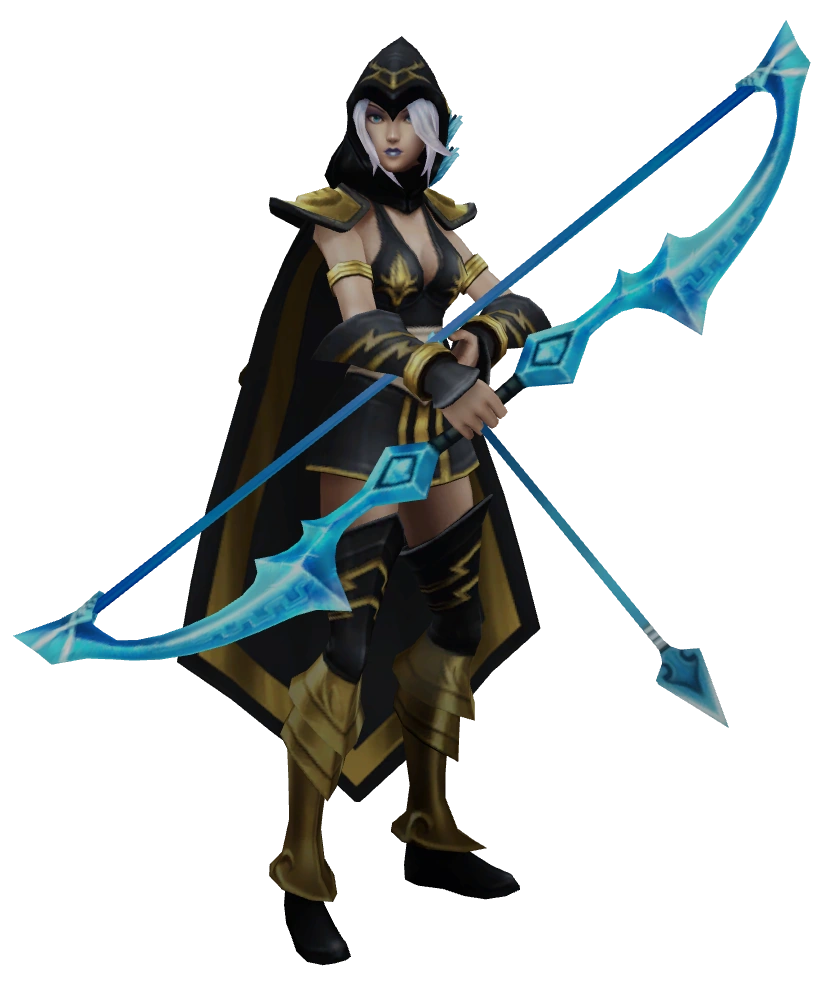
Controller
Controllers assist their allies with potent utility and keep enemies at bay with crowd control. Weak when alone, supports are capable of massively amplifying their teammates' power to become the strongest class in group combat (or teamfights), supplying crucial utility or crowd control at clutch moments to save allies from death and enable takedowns on the enemy team
Supports typically start out by assisting the marksman in lane, as their own power is less dependent on items to function well, but over time their contribution expands as they lend aid to their entire team with both their spells and effective, yet affordable, items. Sub-classes of Controllers are enchanters and catchers
Catchers
Catchers specialize in locking down opponents or, in some cases, entire battlefields by creating intense zones of threat that only foolish enemies would dare wade through. Although not as reliant on their friends as Enchanters, the fragile Catchers greatly benefit from allied presence - both to deter incoming danger and to help capitalize on targets they've locked down
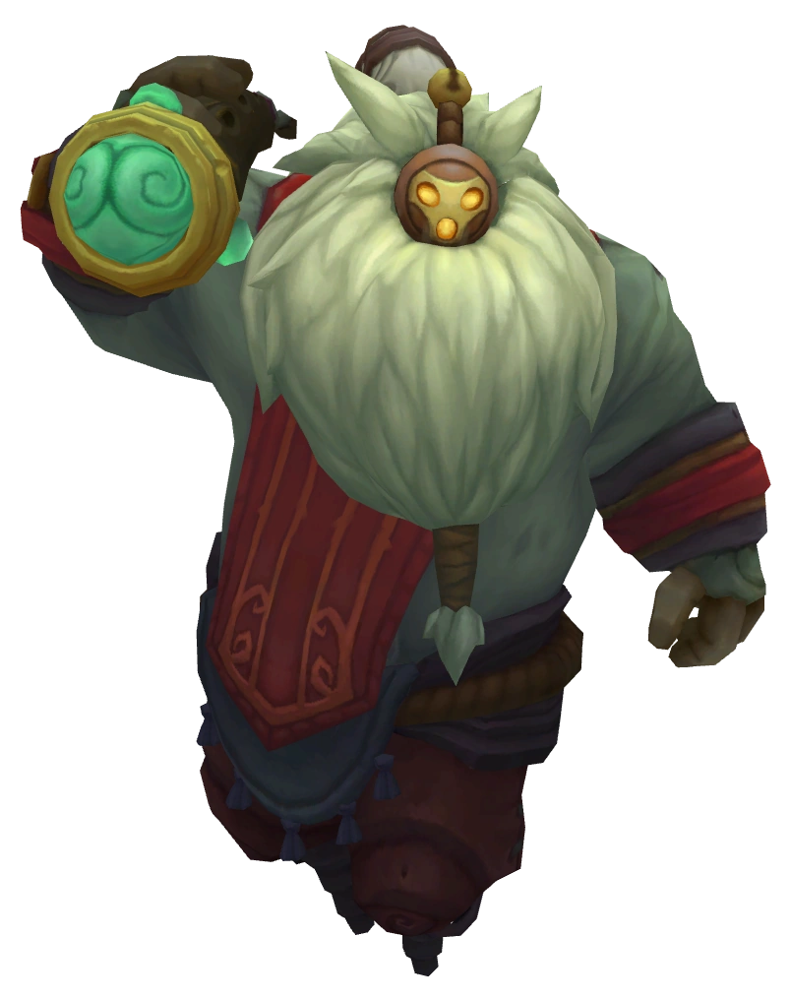
Enchanters
Enchanters focus on amplifying their allies' effectiveness by directly augmenting them and defending them from incoming threats. Enchanters themselves are often quite fragile and bring relatively low damage to the table, meaning they really only shine when grouped together with others

Fighter
Fighters (also known as Bruisers) are a diverse group of short-ranged combatants who excel at both dealing and surviving damage. With easy access to heavy, continuous damage (or DPS) and a host of innate defenses, fighters thrive in extended fights as they seek out enemies to take down, but their limited range puts them at constant risk of being kept at bay (or kited) by their opponents via crowd control, range and mobility
Fighters tend to have an advantage against assassins, whose burst tends to fall short of killing them when unaided, as well as tanks, whose inferior damage allows fighters to eventually defeat them in duels, but often struggle against mages and marksmen, whose superior reach allows them to kite approaching fighters. Sub-classes of the Fighters are juggernauts, and divers
Divers
Divers are the more mobile portion of the Fighter class. Divers excel at singling out high-priority targets to blitz toward, immediately forcing those targets (and their teammates) to deal with the diver’s presence. Divers are not as durable as the tanks or juggernauts of the world, but Divers can take their fair share of punishment while bringing enough damage to be a real kill threat if left unchecked
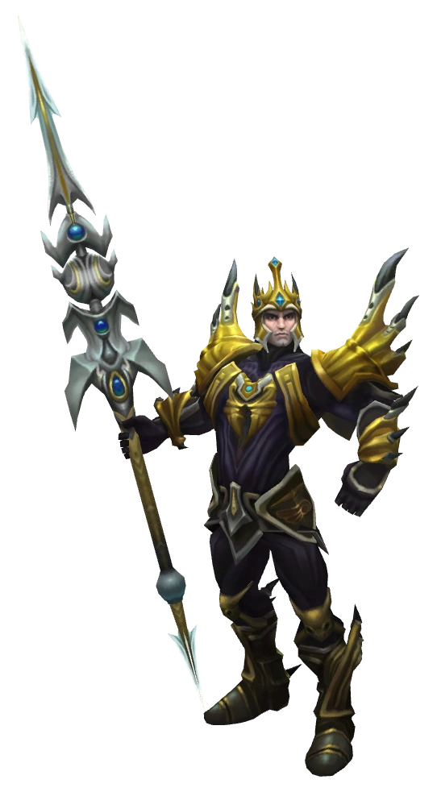
Juggernauts
Juggernauts are melee titans who relentlessly march down the opposition and devastate those foolish enough to get within their grasp. They are the only subclass who excel at both dealing and taking significant amounts of damage, but in turn they have a tough time closing in on targets due to their low range and extremely limited mobility
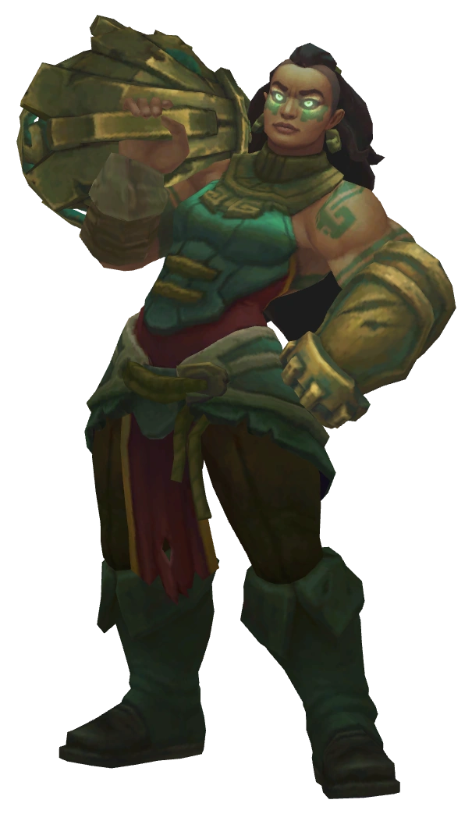Mage
Mages are champions who typically possess great reach, ability-based area of effect damage and crowd control, and who use all of these strengths in tandem with each other to trap and destroy enemies from a distance. Specializing in magic damage, often burst damage, and therefore investing heavily in items that allow them to cast stronger and faster spells, mages excel at chaining their abilities together in powerful combos in order to win fights, though their abilities also tend to be difficult to land and can be mitigated, if not avoided completely, by their targets if they react in time
Though mages tend to focus on killing prime targets in combat, they can also fall back to their innate crowd control and utility to manipulate key opponents, protecting their team from them or setting them up for a takedown, and in the right circumstances can damage and control multiple enemies at a time. In spite of the influence they exert, mages tend to be innately fragile, and fall quickly to direct strikes
In general, mages are capable of dealing well with marksmen, as their burst can kill them before they can return the same amount of damage, and fighters, as their crowd control tends to make them excellent kiters. However, they are easily shut down by assassins who can often bypass their reach and spells completely, and tanks, who can lock them down and soak up their abilities better than other classes. Sub-classes of Mages are burst, battle, and artillery Mages
Artillery
Artillery Mages are the masters of range, and they leverage that advantage to whittle down their opponents over time from great distances. In turn, Artillery Mages are severely punished when enemies finally succeed in closing in on them, due to their extreme fragility and limited mobility
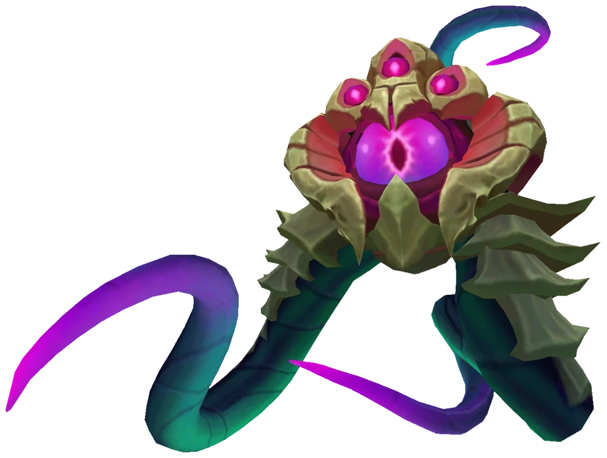
Battlemages
Battlemages (also known as Warlocks) get into the middle of the fray, seeking to wreak havoc upon the entire enemy team with their overwhelming sustained area damage. Due to their relatively short (but not melee) combat ranges and the need to burn down their opponents over time, Battle Mages have significant defensive capabilities that range from sustaining endlessly to literally defying death for a short period of time
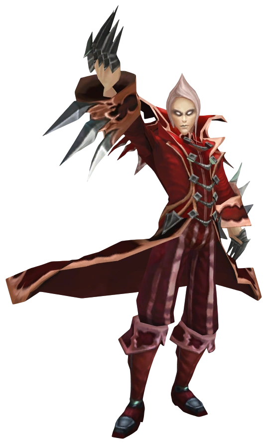Burst
Burst Mages aim to single out vulnerable targets by locking them down and following up with a devastating barrage of damage from range. They are strongest when using their full suite of spells executed perfectly to maximum effect, and most vulnerable when they cannot deliver
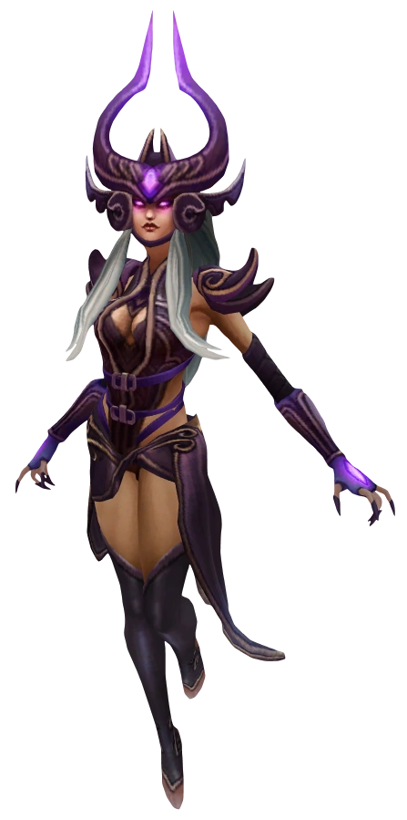Slayer
Slayers are highly mobile champions who specialize in single target burst damage. What they generally lack in resilience, they more than make up for with their ability to quickly cover large distances, kill priority targets and retreat just as fast. Epitomizing a high risk, high reward playstyle, assassins are natural opportunists and prefer to strike when their targets are alone and vulnerable, rather than engage them in a direct assault, favoring damage-oriented item builds to capitalize on their offensive capabilities
They're particularly effective against softer (or squishy) targets, especially mages and marksmen, but often struggle against the heightened defenses of fighters and tanks. Subclasses of Slayers are assassins and skirmishers
Assassins
Assassins specialize in infiltrating enemy lines with their unrivaled mobility to quickly dispatch high-priority targets. Due to their mostly melee nature, Assassins must put themselves into dangerous positions in order to execute their targets. Luckily, they often have defensive tricks up their sleeves that, if used cleverly, allow them to effectively avoid incoming damage
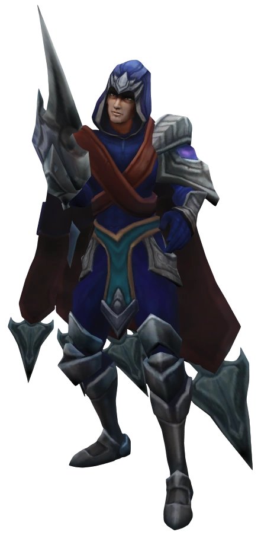
Skirmishers
Skirmishers (also known as Duelists) aim to shred through any nearby enemy that approaches. Because Skirmishers lack high-end burst damage or reliable ways of closing in on high-priority targets, they are instead armed with situationally powerful defensive tools to survive in the fray, along with extreme sustained damage to cut down even the most durable targets
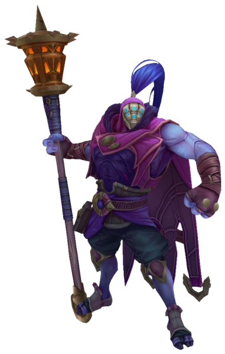Tank
Tanks are tough melee champions who sacrifice damage in exchange for powerful crowd control. While able to engage enemies in combat, a tank's purpose isn't usually to kill opponents; rather, tanks excel at disrupting enemies and diverting focus to themselves, allowing them to lock down specific targets (or several targets at once), as well as remove (or peel) threats from their allies
In addition to strong base defenses, tanks generally have a means of amplifying their tankiness even further with their abilities, and tend to fully invest in defensive items to maximize their resilience. However, tanks lack the tools to truly succeed in single combat, and their influence is limited by their low overall mobility, preventing them from constantly staying on top of their targets
As tanks can handle burst damage very well, they tend to succeed against assassins and most mages, but their vulnerability to continuous damage puts them at a disadvantage against fighters and marksmen. Subcategories of Tanks are vanguards, and wardens
Vanguards
Vanguards are offensive tanks. Vanguards lead the charge for their team and specialize at bringing the action. Their explosive team fight initiation seeks to catch enemies out of position while allowing allies to follow-up to devastating effect
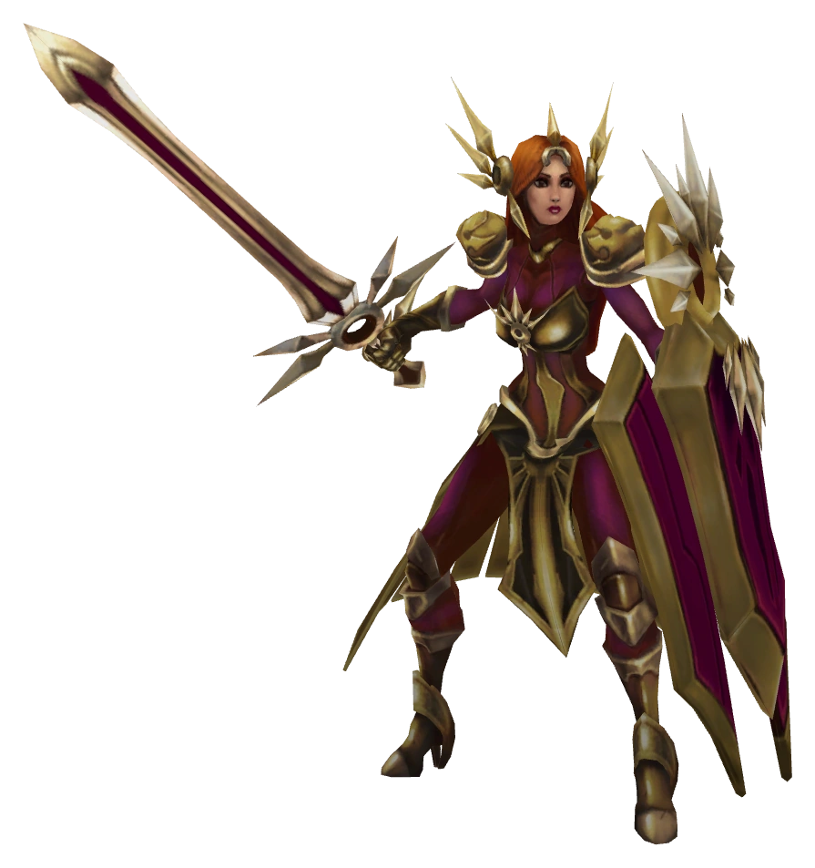
Wardens
Wardens are defensive tanks. Wardens stand steadfast, seeking to hold the line by persistently locking down any on-comers who try to pass them. Wardens keep their allies out of harm’s way and allow them to safely deal with enemies caught in the fray
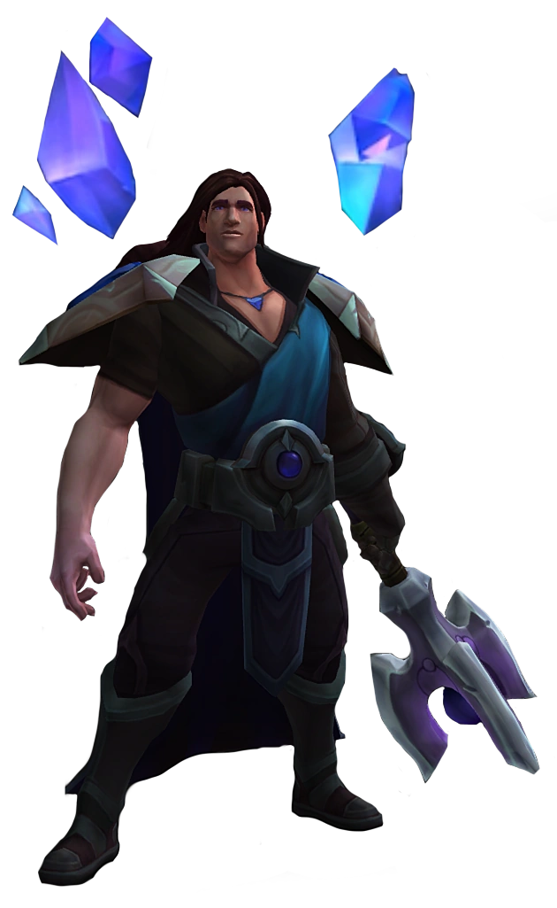Specialist (or Unclassified)
Specialists are a diverse group of champions who do not "fit into a neat little box" in regards to other class/subclass specifications. The majority of these champions were once part of other sub-classes but were reclassified in the V7.10 update, including a large number of champions from the former Zoner subclass of Controller. As a consequence, many Specialists exhibit "zone control" either as a dominant or secondary attribute, including many of the pre-7.10 Specialists
A Zone Controller is a champion whose influence is limited either to telegraphed zones—such as Azir's Soldiers and Time Bomb—or a persistent threat that is dependent on cooldown knowledge—such as Feast, Chronoshift or Crowstorm. The latter type of Zone Controller is comparable in their psychological threat to a Juggernaut, except that this threat largely diminishes once the problematic ability is known to be on cooldown
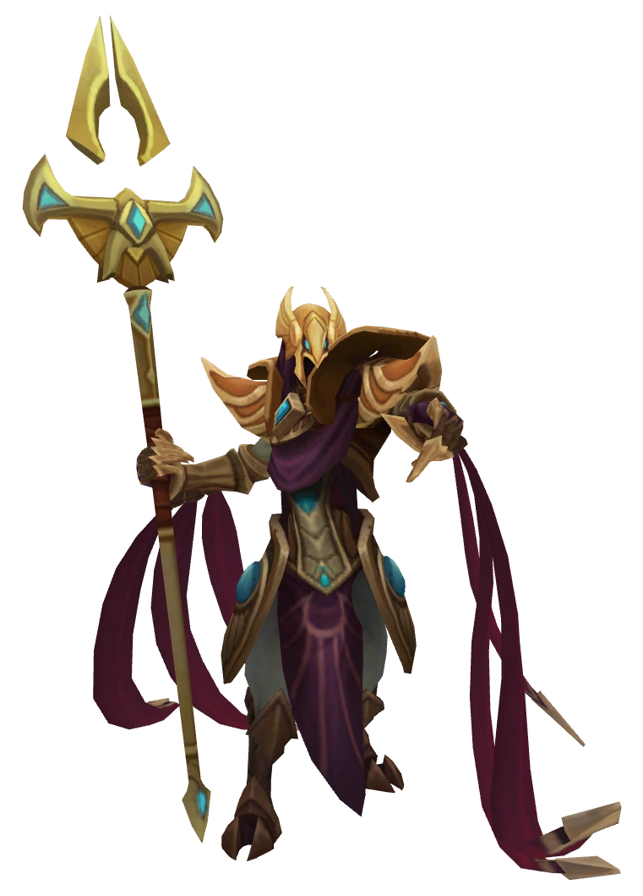